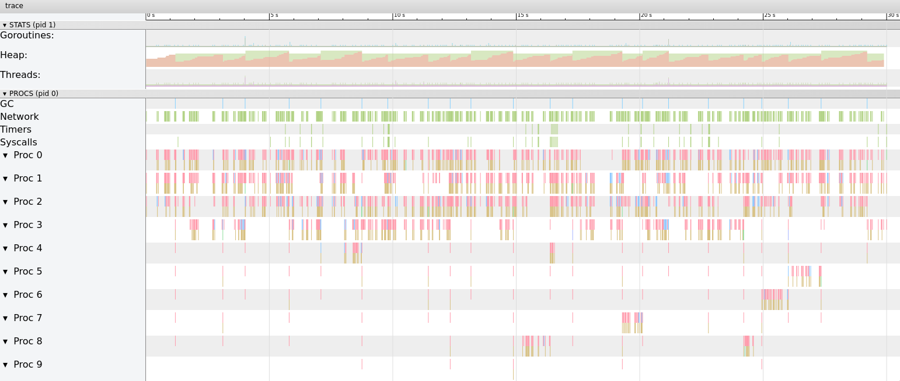

Watch ya buffer size
Mar 7, 2020 08:59 · 698 words · 4 minute read
Buffers are key pieces when writing software, they can be smaller or bigger based on your needs. But when you have too much of then with big sizes things start to Go out of control.
Looking at one of our Go microservices heap and trace profiles I spotted the linear increase in heap memory which triggered an abnormal number of GC runs (almost 25) during the 30s spam of the profile. The memory usage was pretty high too.

It was clear that the Go’s Heap was filling up and the garbage collector was running too often because of that.
With further investigation, I took a CPU profile that showed runtime.memclrNoHeapPointers was consuming most of the cpu time. That was strange, you would normally expect to see pieces of your code to be running more often and not the runtime of the language itself:
(pprof) top
Showing nodes accounting for 440ms, 57.14% of 770ms total
Showing top 10 nodes out of 285
flat flat% sum% cum cum%
130ms 16.88% 16.88% 130ms 16.88% runtime.memclrNoHeapPointers
80ms 10.39% 27.27% 80ms 10.39% runtime.futex
60ms 7.79% 35.06% 80ms 10.39% syscall.Syscall
40ms 5.19% 40.26% 60ms 7.79% runtime.scanobject
30ms 3.90% 44.16% 30ms 3.90% runtime.usleep
20ms 2.60% 46.75% 20ms 2.60% runtime.findfunc
20ms 2.60% 49.35% 20ms 2.60% runtime.memmove
20ms 2.60% 51.95% 30ms 3.90% runtime.newobject
20ms 2.60% 54.55% 20ms 2.60% runtime.nextFreeFast
20ms 2.60% 57.14% 20ms 2.60% runtime.pageIndexOf
The runtime.memclrNoHeapPointers function clear memory addresses starting at the given address, it’s part of the sweep phase in the Go’s mark-and-sweep garbage collector. This function handles noscan objects, which means that it only handle memory cleaning of objects that do not have pointers. That’s a clear clue for us that we are allocating too much memory for slices/arrays/buffers, but where? I’m not allocating large structures anywhere in the code 🤔.
Going further down the call tree:
(pprof) top memclrNoHeapPointers
Active filters:
focus=memclrNoHeapPointers
Showing nodes accounting for 130ms, 16.88% of 770ms total
Showing top 10 nodes out of 12
flat flat% sum% cum cum%
130ms 16.88% 16.88% 130ms 16.88% runtime.memclrNoHeapPointers
0 0% 16.88% 130ms 16.88% cloud.google.com/go/storage.(*Writer).open.func1
0 0% 16.88% 130ms 16.88% google.golang.org/api/gensupport.NewInfoFromMedia
0 0% 16.88% 130ms 16.88% google.golang.org/api/gensupport.NewMediaBuffer
0 0% 16.88% 130ms 16.88% google.golang.org/api/gensupport.PrepareUpload
0 0% 16.88% 130ms 16.88% google.golang.org/api/storage/v1.(*ObjectsInsertCall).Media
0 0% 16.88% 130ms 16.88% runtime.(*mheap).alloc
0 0% 16.88% 130ms 16.88% runtime.largeAlloc
0 0% 16.88% 130ms 16.88% runtime.makeslice
0 0% 16.88% 130ms 16.88% runtime.mallocgc
The root cause seems to be Google’s Storage Writer implementation, more precisely gensupport.NewInfoFromMedia that’s using most of the cpu time.
The heap memory profile is also pointing out to the same conclusion:
(pprof) top
Showing nodes accounting for 34359.68kB, 100% of 34359.68kB total
Showing top 10 nodes out of 28
flat flat% sum% cum cum%
32768kB 95.37% 95.37% 32768kB 95.37% google.golang.org/api/gensupport.NewMediaBuffer
557.26kB 1.62% 96.99% 557.26kB 1.62% crypto/elliptic.initTable
520.04kB 1.51% 98.50% 520.04kB 1.51% hash/crc64.makeSlicingBy8Table
514.38kB 1.50% 100% 514.38kB 1.50% github.com/golang/protobuf/proto.RegisterType
0 0% 100% 32768kB 95.37% cloud.google.com/go/storage.(*Writer).open.func1
0 0% 100% 557.26kB 1.62% crypto/ecdsa.Verify
0 0% 100% 557.26kB 1.62% crypto/ecdsa.verify
0 0% 100% 557.26kB 1.62% crypto/ecdsa.verifyGeneric
0 0% 100% 557.26kB 1.62% crypto/elliptic.(*p256Point).p256BaseMult
0 0% 100% 557.26kB 1.62% crypto/elliptic.p256Curve.CombinedMult
Looking at the code of NewMediaBuffer we can see the following:
func NewMediaBuffer(media io.Reader, chunkSize int) *MediaBuffer {
return &MediaBuffer{media: media, chunk: make([]byte, 0, chunkSize)}
The make language constructor is initializing a byte array of chunkSize items and a custom capacity, which is allocated straight away.
NewInfoFromMedia, which is visible in the CPU profile uses this method to create a buffer:
NewMediaBuffer(rdr, googleapi.DefaultUploadChunkSize)
Guess what, googleapi.DefaultUploadChunkSize is 16MB(!)
That’s a huge memory buffer for each writer created, didn’t take much time to realize where the heap spikes and GC load is comming from.
Since we handle small objects(<100kb) most of the time, adjusting the ChunkSize to a lower value fixed the issue:
writer := s.Bucket.Object(filename).NewWriter(s.Context)
writer.ChunkSize = defaultChunkSize
Damn Google, not all programs are handling such large files :|
This simple change decreased the memory usage of the service by 10-20x.
We can achieve even better results with buffer reuse, a technique used on databases and cache applications to reuse memory buffers to avoid the overhead of a garbage collector run and future heap allocations. This can be done easily in Go with something like sync.Pool or go-slab.
See you again next time 😄.